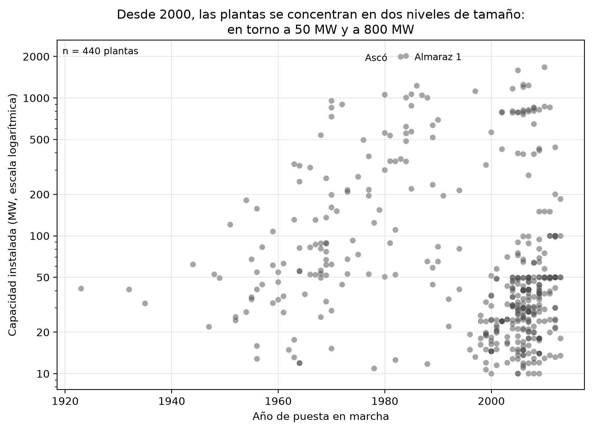
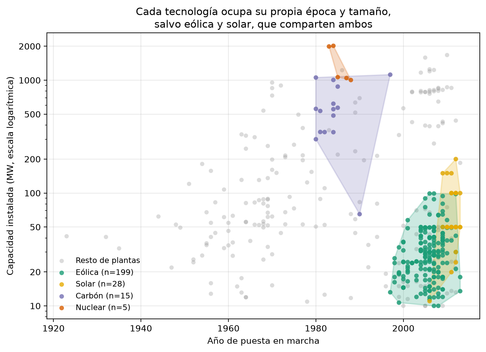
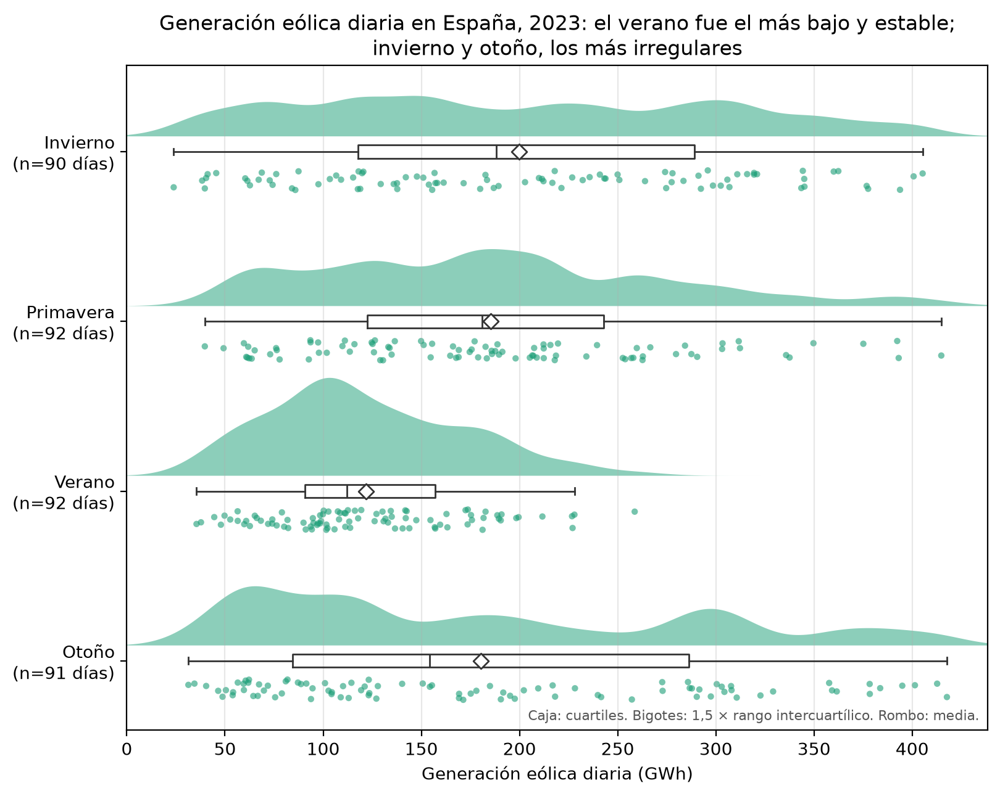

Tres técnicas de visualización
1. Diagrama de dispersión (scatterplot)
Datos: Global Power Plant Database v1.3 (World Resources Institute), plantas de España con año de puesta en marcha (n = 440). Licencia CC BY 4.0.

Qué muestra. Si el tamaño de las plantas depende de su época. La correlación global es débil (−0,17), pero desde 2000 las plantas se agrupan en dos niveles, en torno a 50 y a 800 MW: de las de unos 50 MW, 38 de 44 son eólicas o solares, y las de 700 a 900 MW son todas de gas.
Audiencia. Personas interesadas en energía, sin necesidad de formación estadística.
2. Envolvente convexa (convex hull)
Mismos datos que la figura 1. Envolventes de eólica, solar, carbón y nuclear, calculadas sobre el logaritmo de la capacidad.

Qué muestra. Qué tecnología ocupa qué época y qué tamaño: la nuclear, un triángulo de 1983 a 1988 y de 1.000 a 2.000 MW; el carbón, de 1980 a 1997; eólica y solar comparten época y tamaño.
Cautelas. La nuclear son solo cinco plantas; una central de carbón de 65 MW estira su polígono; el gas se omite porque su envolvente cubriría casi todo el plano.
Audiencia. La misma que la figura 1.
3. Raincloud plot
Datos: generación eólica diaria de España en 2023, agrupada por estación del año (n ≈ 90 días por grupo). Fuente: Red Eléctrica de España, REData.

Qué muestra. Cuánto y con cuánta variabilidad sopla el viento en cada estación. El verano es el más bajo y estable (mediana 112 GWh; mitad central de 91 a 157). Invierno y otoño generan más pero son irregulares (cajas de 118 a 289 y de 85 a 286 GWh, con días de 24 a 418).
Por qué estos datos. La base de plantas no servía para esta técnica: su capacidad abarca órdenes de magnitud y los años de España se cortan en 2013. Una variable continua, cuatro grupos y unos 90 días por grupo encajan con lo que pide un raincloud.
Audiencia. Personas del sector eléctrico, por ejemplo quien planifica el respaldo de la red. Limitación: es un solo año y el invierno agrupa enero, febrero y diciembre de 2023.
Bibliografía y fuentes
Datos
- Global Energy Observatory, Google, KTH Royal Institute of Technology in Stockholm, Enipedia y World Resources Institute (2019). Global Power Plant Database, v1.3.0. CC BY 4.0. datasets.wri.org
- Red Eléctrica de España. REData: API de datos (estructura de generación, agregación diaria). ree.es/es/apidatos
Referencias
Material de la asignatura (UOC)
- Tipos de visualizaciones de datos: gráfico de dispersión, correlación y causalidad, catálogos de gráficos.
- Tipos de visualizaciones avanzadas: visualizaciones bivariantes y gráfico de dispersión.
- Guía para crear una visualización: principios de la Gestalt (cerramiento, semejanza) y ratio datos/tinta de Tufte.
- Guía de lecturas en el ámbito de la visualización de datos: cuarteto de Anscombe, box-plots y violin plots, principios de la Gestalt (Few), Tufte (1983).
- Introducción a la visualización de la información: correlación y causalidad.
- Introducción a ggplot2 y ggmap: gráficos de caja y de violín.